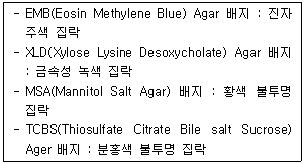
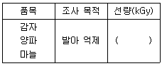

식품산업기사 (2020-08-22 기출문제)
1과목: 식품위생학
1. 1일 섭취허용량이 체중 1kg당 10mg이하인 첨가물을 어떤 식품에 사용하려고 하는데 체중 60kg인 사람이 이 식품을 1일 500g씩 섭취하려고 하면, 이 첨가물의 잔류 허용량은 식품의 몇 %가 되는가?
- 0.12% 이하
- 0.17% 이하
- 0.22% 이하
- 0.27% 이하
(정답률: 62%)

2. 다음 중 인수공통감염병이 아닌 것은?
- 중증열성혈소판감소증후군
- 탄저
- 급성회백수염
- 중증급성호흡기증후군
(정답률: 66%)
3. COD에 대한 설명 중 틀린 것은?
- COD란 화학적 산소 요구량을 말한다.
- BOD가 적으면 COD도 적다.
- COD는 BOD에 비해 단시간내에 측정 가능하다.
- 식품공장 폐수의 오염정도를 측정할 수 있다.
(정답률: 76%)
4. 병원체에 따른 인수공통감염병의 분류가 잘못된 것은?
- 세균 - 장출혈성대장균감염증
- 세균 - 결핵
- 리케차 - Q열
- 리케차 – 일본뇌염
(정답률: 70%)
5. 육류가공 시 생성되는 발암성 물질로 발색제를 첨가하여 생성되는 유해물질은?
- 나이트로사민
- 아크릴아마이드
- 에틸카바메이트
- 다환방향족탄화수소
(정답률: 65%)
6. 식품첨가물로 산화방지제를 사용하는 이유로 거리가 먼 것은?
- 산패에 의한 변색을 방지한다.
- 독성물질의 생성을 방지한다.
- 식욕을 향상시키는 효과가 있다.
- 이산화물의 불쾌한 냄새 생성을 방지한다.
(정답률: 86%)
7. 식품위생검사를 위한 일반적인 채취 방법으로 옳은 것은?
- 깡통, 병, 상자 등 용기에 넣어서 유통되는 식품 등은 반드시 개봉한 후 채취한다.
- 합성착색료 등의 화학 물질과 같이 균질한 상태의 것은 여러 부위에서 가능한 한 많은 양을 채취하는 것이 원칙이다.
- 대장균이나 병원 미생물의 경우와 같이 목적물이 불균질할 때에는 1개 부위에서 최소량을 채취하는 것이 원칙이다.
- 식품에 의한 감염병이나 식중독의 발생시 세균학적 검사에는 가능한 한 많은 양을 채취하는 것이 원칙이다.
(정답률: 71%)
8. 포르말린(formalin)을 축합시켜 만든 것으로 이것이 용출될 때 위생상 문제가 될 수 있는 합성수지는?
- 페놀수지
- 염화비닐수지
- 폴리에틸렌수지
- 폴리스틸렌수지
(정답률: 71%)
9. 멜라린 수지로 만든 식기에서 위생상 문제가 될 수 있는 주요 성분은?
- 비소
- 게르마늄
- 포름알데히드
- 단량체
(정답률: 81%)
10. 쥐와 관련되어 감염되는 질병이 아닌 것은?
- 신중후군출혈열
- 살모넬라증
- 페스트
- 폴리오
(정답률: 72%)
11. 독소형 식중독균에 속하며 신경증상을 일으킬 수 잇는 원인균은?
- Salmonella enteritidis
- Yersinia enterocolitica
- Clostridium botulinum
- Vibrio parahaemolyticus
(정답률: 77%)
12. 식품의 기준 및 규격에 의거하여 부패·변질 우려가 있는 검체를 미생물 검사용으로 운반하기 위해서는 멸균용기에 무균적으로 채취하여 몇 도의 온도를 유지하면서 몇 시간 이내에 검사기관에 운반해야 하는가?
- 0℃, 4시간
- 12℃±3이내, 6시간
- 36℃±2이상, 12시간
- 5℃±3이하, 24시간
(정답률: 72%)
13. 식품과 자연 독성분의 연결이 잘못된 것은?
- 감자 - Solanine
- 섭조개 - Saxitoxin
- 복어 - Tetradotoxin
- 알광대버섯 – Venerupin
(정답률: 82%)
14. 곤충 및 동물의 털과 같이 물에 잘 젖지 아니하는 가벼운 이물검출에 적용하는 이물검사는?
- 여과법
- 체분별법
- 와일드만 플라스크법
- 침강법
(정답률: 69%)
15. PVC(Poly Vinyl Chloride) 필름을 식품포장재로 사용했을 때 잔류할 수 잇는 단위체로 특히 문제가 되는 발암성 유해물질은?
- Calcium chloride
- AN(Acrylonitrile)
- DEP(Diethyl Phthalate)
- VCM(Vinyl Chloride Monomer)
(정답률: 72%)
16. 다음 식중독 중 일반적으로 치사율이 가장 높은 것은?
- 프로테우스 식중독
- 보툴리누스 식중독
- 포도상구균 식중독
- 살모넬라균 식중독
(정답률: 75%)
17. Clostridium botulinum 의 특성이 아닌 것은?
- 식중독 감염 시 현기증, 두통, 신경장애 등이 나타난다.
- 호기성의 그람 음성균이다.
- A형 균은 채소, 과일 및 육류와 관계가 깊다.
- 불충분하게 살균된 통조림 속에 번식하는 간균이다.
(정답률: 72%)
18. 식품에 사용되는 보존료의 조건으로 부적합한 것은?
- 인체에 유해한 영향을 미치지 않을 것
- 적은 양으로 효과적일 것
- 식품의 종류에 따라 작용이 가변적일 것
- 체내에 축적되지 않을 것
(정답률: 88%)
19. 핵분열 생성물질로서 반감기는 짧으나 비교적 양이 많아서 식품 오염에 문제가 될 수 있는 핵종은?
- 90Sr
- 131I
- 137Cs
- 106Ru
(정답률: 66%)
20. 우유 살균 처리에서 한계온도의 기준이 되는 것은?
- 결핵균
- 티푸스균
- 연쇄상구균
- 디프테리아균
(정답률: 65%)
2과목: 식품화학
21. 관능검사의 사용 목적과 거리가 먼 것은?
- 신제품 개발
- 제품 배합비 결정 및 최적화
- 품질 평가방법 개발
- 제품의 화학적 성질 평가
(정답률: 72%)
22. 단백질 분자 내에 티로신(Tyrosine)과 같은 페놀(Phenol) 잔기를 가진 아미노산의 존재에 의해서 일어나는 정색반응은?
- 밀론(Milon)반응
- 비우렛(Biuret)반응
- 닌히드린(Ninhydrin)반응
- 유황반응
(정답률: 52%)
23. 단맛이 큰 순서로 나열되어 있는 것은?
- 설탕 ＞ 과당 ＞ 맥아당 ＞ 젖당
- 맥아당 ＞ 젖당 ＞ 설탕 ＞ 과당
- 과당 ＞ 설탕 ＞ 맥아당 ＞ 젖당
- 젖당 ＞ 맥아당 ＞ 과당 ＞ 설탕
(정답률: 81%)
24. 밀가루의 흡수력 및 점탄성을 조사하는데 이용되는 것은?
- Extensogram
- Amylogram
- Farinogram
- Texturometer
(정답률: 54%)
25. 비타민 M이라고도 불리며 결핍시 거대 혈구성빈혈(Megalooblastic anemia)을 초래하는 비타민은?
- 비오틴(Biotin)
- 엽산(Folic acid)
- 비타민B12
- 비타민C
(정답률: 71%)
26. 아미노산인 트립토판을 전구체로 하여 만들어지는 수용성 비타민은?
- 비오틴(Biotin)
- 엽산(Folic acid)
- 나이아신(Niacin)
- 리보플라빈(Riboflavin)
(정답률: 64%)
27. 가공식품에 사용되는 솔비톨(Sorbitonl)의 기능이 아닌 것은?
- 저칼로리 감미료
- 계면활성제
- 비타민 C 합성 시 전구물질
- 착색제
(정답률: 69%)
28. 튀김과 같이 유지를 고온에서 오랜 시간 가열하였을 때 나타나는 반응과 거리가 먼 것은?
- 비누화반응
- 열분해반응
- 산화반응
- 중합반응
(정답률: 68%)
29. 다음 색소 중 배당체로 존재하는 것은?
- 안토시아닌(Anthocyanin)
- 클로로필(Chlorophyll)
- 헤모글로빈(Hemoglobin)
- 미오글로빈(Myoglobin)
(정답률: 56%)
30. 닌히드린 반응(Ninhydrin reaction)이 이용되는 것은?
- 아미노산의 정성
- 지방질의 정성
- 탄수화물의 정성
- 비타민의 정성
(정답률: 75%)
31. 면실 중에 존재하는 항산화 성분으로 강력한 항산화력이 인정되나 독성 때문에 사용되지 못하는 것은?
- 커큐민(Curcumin)
- 고시폴(Gossypol)
- 구아이아콜(Guaiacol)
- 레시틴(Lechitin)
(정답률: 83%)
32. 단당류에 부제탄소(Asymmetric carbon)가 3개일 때 이론적으로 존재하는 입체 이성체(Stereoisomer)의 수는?
- 2개
- 4개
- 8개
- 16개
(정답률: 70%)
33. 다음 식품 중 수분활성도(Aw)가 낮아 일반적으로 저장성이 가장 높은 것은?
- 비스킷
- 소시지
- 식빵
- 쌀
(정답률: 70%)
34. 겨자과 식물(겨자, 배추, 무, 양배추 등)의 대표적인 향기 성분에 대한 설명 중 틀린 것은?
- 식물체 중의 향기성분의 전구물질이 있다.
- 조리과정 또는 조직이 파쇄될 때 전구물질이 효소작용을 받아 향기성분으로 전환된다.
- 대표적인 전구물질은 황화이알릴(Diallylsulfide)이다.
- 이소티오시안산(Isothiocyanate)은 이들의 대표적인 향기성분들과 관계가 깊다.
(정답률: 54%)
35. 물은 알코올이나 에테를 등에 비해 분자량이 매우 적음에도 이들에 비해 비점이 높은 특징이 있다. 이와 같은 이유는 물의 무슨 결합 때문인가?
- 공유결합
- 이온결합
- 수소결합
- 배위결합
(정답률: 72%)
36. 쌀 1g을 취하여 질소를 정량한 결과, 전질소가 1.5% 일 때 쌀 중의 조단백질 함량은? (단, 질소계수는 6.25로 가정한다.)
- 약 8.4%
- 약 9.4%
- 약 10.4%
- 약 11.4%
(정답률: 57%)
37. 노화에 대한 설명으로 틀린 것은?
- 2~5℃에서는 물분자간의 수소결합이 안정되어 노화가 잘 일어난다.
- 노화는 수분함량이 많으면 많을수록 잘 일어난다.
- pH에 영향을 받아 강산성 상태에서는 노화가 촉진된다.
- Amylopectin의 함량이 많을수록 노화가 억제된다.
(정답률: 58%)
38. 식품 원료 50g중 순수한 단백질 함량이 10g, 질소 함량이 1.7g일 때 이 식품의 질소계수는?
- 0.17
- 0.34
- 5.88
- 8.50
(정답률: 39%)
39. 다음 관능검사 중 가장 주관적인 검사는?
- 차이 검사
- 묘사 검사
- 기호도 검사
- 삼점 검사
(정답률: 81%)
40. 분산계가 유탁질로 되어 있는 식품은?
- 잼
- 맥주
- 버터
- 쇠기름
(정답률: 64%)
3과목: 식품가공학
41. 유지의 정제방법에 대한 설명으로 틀린 것은?
- 탈산은 중화에 의한다.
- 탈색은 가열 및 흡착에 의한다.
- 탈납은 가열에 의한다.
- 탈취는 감압하에서 가열한다.
(정답률: 57%)
42. 감귤로 과실 음료를 제조할 때, 통조림 후 용액의 혼탁을 유발하는 것과 가장 관계가 깊은 물질은?
- Hesperidin, Pectin
- Vitamin A, Vitamin C
- Tannin, Phenol
- Yeast, Amino acid
(정답률: 67%)
43. 과실 주스 중의 부유물 침전을 촉진시키기 위해 사용되는 것은?
- 카제인(Casein)
- 펙틴(Pectin)
- 글루콘산(Gluconic acid)
- 셀룰라아제(Cellulase)
(정답률: 45%)
44. 콩나물 성장에 따른 화학적 성분의 변화에 대한 설명으로 틀린 것은?
- 비타민 C함량의 증가
- 가용성 질소화합물의 감소
- 지방 함량의 감소
- 섬유소 함량의 감소
(정답률: 69%)
45. 식육가공에서 훈연 침투속도에 영향을 미치지 않는 것은?
- 훈연 농도
- 훈연재의 색상
- 훈연실의 공기속도
- 훈연실의 상대습도
(정답률: 81%)
46. 식품에 함유된 어떤 세균의 내열성(D값)이 40초이다. 균의 농도를 104에서 10까지 감소시키는데 소요되는 총 살균시간(TDT)은 얼마인가?
- 120초
- 240초
- 300초
- 400초
(정답률: 50%)
47. 치즈에 대한 설명으로 옳은 것은?
- 치즈는 우유의 지방을 응고시켜 제조한다.
- 치즈는 우유의 단백질을 렌닛(Rennet) 또는 젖산균으로 응고시켜 얻은 커드(Curd)를 이용한다.
- 커드를 모은 후에 맛과 풍미를 좋게 하기 위하여 식염을 커드량의 5~7% 첨가한다.
- 치즈 숙성시의 피막제는 호화전분을 사용한다.
(정답률: 68%)
48. 10%의 고형분을 함유한 포도주스 1kg을 감압농축시켜 고형분 50%로 농축할 경우 제거해야 할 수분의 양은?
- 0.2kg
- 0.4kg
- 0.6kg
- 0.8kg
(정답률: 39%)
49. 신선한 달걀의 판정과 관계가 먼 것은?
- 난각의 상태
- 달걀의 비중
- 기실의 크기
- 난황의 색깔
(정답률: 58%)
50. 제빵 공정에서 처음에 밀가루를 체로 치는 가장 주된 이유는?
- 불순물을 제거하기 위하여
- 해충을 제거하기 위하여
- 산소를 풍부하게 함유시키기 위하여
- 가스를 제거하기 위하여
(정답률: 73%)
51. 맥주를 제조할 때 이용하는 보리의 조건으로 바람직하지 않은 것은?
- 전분이 많은 것
- 수분이 13% 이하인 것
- 껍질이 얇은 것
- 단백질이 많은 것
(정답률: 55%)
52. 마요네즈 제조에 있어 난황의 주된 작용은?
- 응고제 작용
- 유화제 작용
- 기포제 작용
- 팽창제 작용
(정답률: 81%)
53. 쌀의 저장 형태 중 저장성이 가장 큰 것은?
- 5분 도미
- 백미
- 벼
- 현미
(정답률: 57%)
54. 햄이나 베이컨을 만들 때 염지액 처리시 첨가되는 질산염과 아질산염의 기능으로 가장 적합한 것은?
- 수율 증진
- 멸균작용
- 독특한 향기의 생성
- 고기색의 고정
(정답률: 77%)
55. 원료크림의 지방량이 80kg이고 생산된 버터의 양이 100kg이라면, 버터의 증량률(Overrun)은?
- 5%
- 15%
- 25%
- 80%
(정답률: 56%)
56. 분유 제조 시 건조방법으로 적합한 것은?
- 자연 건조
- 열풍 건조
- 분무 건조
- 피막 건조
(정답률: 70%)
57. 콩 단백질의 주성분이며 두부 제조 시 묽은 염류 용액에 의해 응고되는 성질을 이용하는 물질은?
- 알부민(Albumin)
- 글리시닌(Glycinin)
- 제인(Zein)
- 락토글로불린(Lactoglobulin)
(정답률: 61%)
58. 냉동 식품용 포장지의 일반적인 특성이 아닌 것은?
- 방습성이 있을 것
- 가스 투과성이 낮을 것
- 수축 포장 시 가열 수축성이 없을 것
- 저온에서 경화되지 않을 것
(정답률: 66%)
59. 식물성 유지가 동물성 유지보다 산패가 덜 일어나는 이유로 적합한 것은?
- 천연황산화제가 들어있기 때문에
- 발연점이 낮기 때문에
- 시너지스트(Synergist)가 없기 때문에
- 열에 안정하기 때문에
(정답률: 70%)
60. 식품을 가열하는 데 50J의 에너지가 요구되었다면, 이를 칼로리로 환산하면 약 얼마인가?
- 210cal
- 12cal
- 210kcal
- 12kcal
(정답률: 40%)
4과목: 식품미생물학
61. 아황산펄프폐액을 사용한 효모생산을 위하여 개발된 발효조는?
- Waldhof형 배양장치
- Vortex형 배양장치
- Air lift형 배양장치
- Plate tower형 배양장치
(정답률: 63%)
62. 대표적인 곰팡이독소로서 Aspergillus flavus가 생성하는 곰팡이독은?
- 맥각독
- 아플라톡신
- 오크라톡신
- 파튤린
(정답률: 80%)
63. 곰팡이의 분류에 대한 설명으로 틀린 것은?
- 진균류는 조상균류와 순정균류로 분류된다.
- 순정규류는 자낭균류, 담자균류, 불완전균류로 구분된다.
- 균사에 격마(격벽, Septa)이 없는 것을 순정균류, 격막을 가진 것을 조상균류라 한다.
- 조상균류는 호상균류, 접합균류, 난균류로 분류된다.
(정답률: 69%)
64. 간장의 제조공정에 사용되는 균주는?
- Aspergillus tamari
- Aspergillus sojae
- Aspergillus flavus
- Aspergillus glaucus
(정답률: 68%)
65. 종초를 선택하는 일반적인 조건이 아닌 것은?
- 초산 이외의 유기산류나 향기성분인 Ester류를 생성한다.
- 초산을 다시 산화(과산화) 분해하여야 한다.
- 알코올에 대한 내성이 강해야 한다.
- 초산 생성속도가 빨라야 한다.
(정답률: 57%)
66. 여러 가지 선택배지를 이용하여 미생물 검사를 하였더니 다음과 같은 결과가 나왔다. 다음 중 검출 양성이 예상되는 미생물은?

- 장염비브리오균
- 살모넬라균
- 대장균
- 황색포도상구균
(정답률: 61%)
67. 맥주 제조에 사용되는 효모는?
- Saccharomyces fragilis
- Saccharomyces peka
- Saccharomyces cerevisiae
- Zygosaccharomyces rouxii
(정답률: 75%)
68. 미생물이 탄소원으로 가장 많이 이용하는 당질은?
- 포도당(Glucose)
- 자일로오스(Xylose)
- 유당(Lactose)
- 라피노오스(Raffinose)
(정답률: 80%)
69. 글루코오스(Glucose)에 젖산균을 배양하여 발효할 때 Homo 젖산발효에 해당하는 것은?
- C6H12O6 → 2CH3CHOH·COOH
- C6H12O6 → CH3CHOH·COOH + CH2OH + CO2
- C6H12O6 → CH3CHOH·COOH + 2CO2
- C6H12O6 + O2 → CH3CHOH·COOH + 2CO2 + H2O
(정답률: 46%)
70. Botrytis속에 대한 설명 중 옳은 것은?
- 배에 번식하여 단맛이 감소한다.
- 사과에 번식하여 신맛이 감소하여 품질이 감소한다.
- 포도에 번식하면 신맛이 감소하고 단맛이 상승한다.
- 채소류에 번식하여 과성숙을 일으킨다.
(정답률: 61%)
71. 세포내 지방 저장력이 가장 높은 유지 효모는?
- Candida albicans
- Candida utilis
- Rhodotorula glutinis
- Saccharomyces cerevisiae
(정답률: 35%)
72. 공업적으로 Lipase를 생산하는 미생물이 아닌 것은?
- Aspergillus niger
- Rhizopus delemar
- Candida cylindracae
- Aspergillus oryzae
(정답률: 44%)
73. 포도당의 Homo 젖산발효는 어떤 대사경로를 거치는가?
- HMP 경로
- TCA 회로
- EMP 경로
- Krebs 속
(정답률: 60%)
74. 청주, 간장, 된장의 제조에 사용되는 Koji곰팡이의 대표적인 균종으로 항국균이라고 하는 곰팡이는?
- Aspergillus oryzae
- Aspergillus niger
- Aspergillus flavus
- Aspergillus fumigatus
(정답률: 68%)
75. 살아있지만 배양이 안되는 세균을 의미하며, 우효적인 좋은 환경에서 증식되어 식중독을 야기할 수 있는 세균은?
- TPC
- Injured cell
- Aerobic count
- VBNC
(정답률: 53%)
76. 청주에서 품질이 저하되게 하는 화락현상을 유발하는 균은?
- Lactobacillus homohiochii
- Leuconostoc mesentroides
- Saccharomyces cerevisiae
- Aspergillus sake
(정답률: 47%)
77. 주정 제조 시 당화과정이 생략 될 수 있는 원료는?
- 당밀
- 고구마
- 옥수수
- 보리
(정답률: 62%)
78. 미생물의 생육곡선에서 세포내의 RNA는 증가하나 DNA가 일정한 시기는?
- 유도기
- 대수기
- 정상기
- 사멸기
(정답률: 56%)
79. Eumycetes(진균류)가 아닌 것은?
- 세균
- 버섯
- 효모
- 곰팡이
(정답률: 59%)
80. 일반적으로 위균사(Pseudomycelium)를 형성하는 효모는?
- Saccharomyces속
- Candida속
- Hanseniaspora속
- Trigonopsis속
(정답률: 56%)
5과목: 식품제조공정
81. 원심분리를 이용하여 액체와 고체를 분리하려고 할 때 고체의 농도가 높을 경우 사용하는 원심분리기로 적합한 것은?
- 디슬러지 원심분리기(Desludge centrifuge)
- 관형 원심분리기(Tubular centrifuge)
- 원통형 원심분리기(Cylindrical centrifuge)
- 노즐 배출형 원심분리기(Nozzle discharge centrifuge)
(정답률: 47%)
82. 마쇄전분유에서 전분을 분리하기 위해 수십장의 분리판을 가진 회전체로서 원심력을 이용하여 고형물을 분리하는 원심분리기로 옳은 것은?
- 노즐형 원심분리기
- 데칸트형 원심분리기
- 가스 원심분리기
- 원통형 원심분리기
(정답률: 36%)
83. 와이어 메시체 또는 다공판과 이를 지지하는 구조물로 되어 있으며, 진동운동은 기계적 또는 전자기적 장치로 이루어지는 설비로, 미분쇄된 곡류의 분말 등을 사별하는데 사용되는 설비는?
- 바 스크린(Bar screen)
- 진동체(Vibration screen)
- 릴(Reels)
- 사이클론(Cyclone)
(정답률: 62%)
84. 타원형의 용기에 물을 반쯤 채우고 임펠라를 회전시켜 일정 위치에서 기체가 압축 이송되는 장치는?
- 로타리 블로워
- 압축기
- 매시 펌프
- 팬
(정답률: 54%)
85. 우유로부터 크림을 분리하는 공정에서 많이 적용되고 있는 원심분리기는?
- 노즐 배출형 원심분리기(Nozzle discharge centrifuge)
- 원판 원심분리기(Disc bowl centrifuge)
- 디켄더형 원심분리기(Decanter centrifuge)
- 가압 여과기(Filter centrifuge)
(정답률: 52%)
86. 착즙된 오렌지 주스는 15%의 당분을 포함하고 있는데 농축공정을 거치면서 당함량이 60%인 농축 오렌지주스가 되어 저장된다. 당함량이 45%인 오렌지 주스 제품 100kg을 만들려면 착즙 오렌지 주스와 농축 오렌지 주스를 어떤 비율로 혼합해야 하는가?
- 1 : 2
- 1 : 2.8
- 1 : 3
- 1 : 4
(정답률: 56%)
87. 식품의 살균온도를 결정하는 가장 중요한 인자는?
- 식품의 비타민 함량
- 식품의 pH
- 식품의 당도
- 식품의 수분함량
(정답률: 60%)
88. 살균 후 위생상 문제가 되는 미생물이 생존할 수 없는 수준으로 살균하는 방법을 의미하는 용어는?
- 저온 살균법
- 포장 살균법
- 상업적 살균법
- 열탕 살균법
(정답률: 72%)
89. 식품별 조사처리기준에 의한 허용대상 식품별 흡수선량에서 ( )안에 알맞은 것은?

- 0.15 이하
- 0.25 이하
- 1 이하
- 7 이하
(정답률: 68%)
90. 쌀도정 공장에서 도정이 끝난 백미와 쌀겨를 분리 정선하고자 할 때 가장 효과적인 정선법은?
- 자석식 정선법
- 기류 정선법
- 체정선법
- 디스크 정선법
(정답률: 49%)
91. 우유 단백질 중 혈액에서부터 이행된 단백질은?
- 카제인(Casein)
- 이무노글로불린(Immunoglobulin)
- 락토글로불린(Lactoglovulin)
- 락토알부민(Lactoalbumin)
(정답률: 40%)
92. 곡류와 같은 고체를 분쇄하고자 할 때 사용하는 힘이 아닌 것은?
- 충격력(Impact force)
- 유화력(Emulsion force)
- 압축력(Compression force)
- 전단력(Shear force)
(정답률: 75%)
93. 달걀 흰자의 단백질성분이 아닌 것은?
- 오브알부민(Ovalbumin)
- 콘알부민(Conalbumin)
- 오보뮤코이드(Ovomucoid)
- 리포비텔린(Lipovitellin)
(정답률: 58%)
94. 통조림의 제조공정 중 탈기의 목적이 아닌 것은?
- 관내면의 부식억제
- 혐기성 미생물의 발육억제
- 변패관의 식별용이
- 내용물의 산화방지
(정답률: 47%)
95. 분무식 살균 장치에서 유리 용기의 열충격으로 인한 파손을 줄이기 위해 실시하는 조작 순서로 옳은 것은?
- 예열→살균→예냉→냉각→세척
- 예냉→냉각→예열→살균→세척
- 세척→예열→살균→예냉→냉각
- 냉각→세척→예열→살균→예냉
(정답률: 55%)
96. 다음 중 침강분리의 원리와 거리가 먼 것은?
- 중력
- 부력
- 항력
- 장력
(정답률: 54%)
97. 균체 단백질 생산 미생물의 구비조건이 아닌 것은?(오류 신고가 접수된 문제입니다. 반드시 정답과 해설을 확인하시기 바랍니다.)
- 팬(Fan)
- 브로어(Blower)
- 파이프(Pipe)
- 컴프레서(Compressor)
(정답률: 44%)
98. 다음 중 나열된 건조기와 적용 가능한 해당 식품 또는 용도가 잘못 연결된 것은?
- 빈 건조기(Bin dryer) - 마감건조
- 분무 건조기(Spray dryer) - 과일주스
- 기송식 건조기(Pneumatic dryer) - 두유
- 유동층 건조기(Fluidized bed dryer) - 설탕
(정답률: 50%)
99. 바닷물에서 소금성분등은 남기고 물 성분만 통과시키는 막분리 여과법은?
- 한외여과법
- 역삼투압법
- 투석
- 정밀여과법
(정답률: 77%)
100. 어떤 식품을 110℃에서 가열살균하여 미생물을 모두 사멸시키는 데 걸린 시간이 8분이었다. 이를 바르게 표기한 것은?
- D110℃=8분
- Z=8분
- F110℃=8분
- F8min=110℃
(정답률: 64%)
식품을 1일 500g씩 섭취하므로, 1kg당 첨가물 사용량은 10mg 이하이므로 500g당 첨가물 사용량은 5mg 이하입니다.
따라서, 1일 섭취허용량인 600mg에서 500g에 들어있는 첨가물 양인 5mg를 뺀 나머지 잔류 허용량은 595mg 이하입니다.
잔류 허용량을 식품의 총 무게인 500g으로 나누어 백분율로 나타내면, (595mg / 500g) x 100% = 0.12% 이하가 됩니다.
따라서, 정답은 "0.12% 이하"입니다.